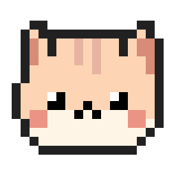

no!
Swats away Reels
Open Instagram Reels or YouTube Shorts and the page blurs straight away. The cat runs over, leaps onto the tab and swipes it shut.

WorkBuddy DownloadFree for Windows · now on Android
WorkBuddy lives on your taskbar. It naps in the corners, types along with you, and swats away time-wasting tabs before you get sucked in.
Windows 10 & 11 · works with Chrome, Edge & Brave · no account needed
psst, you can pet it ↑
Meet your buddy
It stays out of the way, in the corners and along the taskbar, until you need a nudge.
Open Instagram Reels or YouTube Shorts and the page blurs straight away. The cat runs over, leaps onto the tab and swipes it shut.
Tabs you haven't touched in an hour get a small thought bubble. Tap yes and they're gone, with an undo if you change your mind.
Start typing and it pulls out a tiny keyboard. Left-hand keys tap the left paw, right-hand keys the right. Enter gets both.
Go on, type something ⌨
Right-click the cat, type “call Priya back”, tap 10 min. A little clock floats over her head counting down, and when it rings she jumps and shows your note, with a Windows notification too.
Walk away from your desk and it curls up for a nap. Come back and it stretches, yawns and gets back to it.
Chases a yarn ball, rolls around, gets the zoomies, hides in a box. It even hops across to your other monitor.
You see the cat. Your prospects on Zoom, Meet or Teams don't. Want to show it off? One click makes it visible on calls too. It also steps aside for full-screen videos and slides.
Every so often she hops up onto the window you're using and wanders along the tab bar, stops to look around, pounces on a tab, then drops back down to the taskbar.
Grab the cat and she dangles by the scruff, kicking her little legs. Let go and she falls with real gravity, or flick your mouse and throw her across to your other monitor.
18 little moods
Two-minute setup
Download and run the installer. The cat hops onto your taskbar and starts with Windows from then on.
Add it to Chrome, Edge or Brave so the cat can see which tabs are open and close the ones you've blocked. How to add it →
Pick your blocked sites and nudge timing from the tray menu. The cat takes care of the rest.
Private by design
Questions
Yes. Download it, install it and keep it.
Instagram Reels, YouTube Shorts and Facebook Reels out of the box, with TikTok one switch away. You can add any site from the tray menu. The rest of Instagram and YouTube still work.
Right-click the cat and choose Set a reminder…. Type what it's for, then tap 5, 10, 15, 30 minutes or 1 hour, or type any number of minutes. There's also Focus for 25 min for a quick Pomodoro. A tiny alarm clock floats over the cat with the countdown; when it rings you get a bubble with done or snooze 5 min, plus a Windows notification. Reminders survive restarts, and you can cancel one from the same menu.
Set a reminder, a 25-minute focus timer, play with the ball, walk on my tabs, nap time, show or hide the cat on screen share, and hide the cat for an hour.
Yes. Click and drag to pick her up (she dangles by the scruff) and let go anywhere: she falls and lands on the taskbar, or on top of the window below her. Click without dragging to pet her.
It sticks to the taskbar and screen corners, and everything except the cat itself is click-through. It hides for full-screen apps, and you can send it away for an hour from the tray.
Not unless you want them to. By default Windows keeps it out of screen shares and recordings, so only you see it. To show it off on a call, right-click the cat → Show me on screen share (or use the tray menu), and switch it back the same way.
Barely. It's a 32-pixel cat, and it sleeps (and saves power) when you do.
Yes, WorkBuddy for Android is in beta. She lives tiny in your status bar, runs Focus mode (you pick the apps, she asks “how long?” and closes them when the time is up), swats Instagram Reels, YouTube Shorts and Facebook Reels in the apps and in your browser, reminds you to drink water, nudges you to take breaks and rings reminders. iPhone isn't possible: iOS doesn't allow apps to appear on top of other apps.
Not yet. It's Windows and Android for now, with Mac on the wishlist.
Feedback & help
Say hi, suggest a new trick, or ask for help. No account needed, just pick a name.
Loading comments…
Free for Windows 10 & 11. Takes a minute to set up.
Download for WindowsWindows may show “Windows protected your PC” the first time. Click More info → Run anyway.
Step 2
This lets the cat see your tabs so it can close the blocked ones. Works in Chrome, Edge and Brave.
chrome://extensions (or edge://extensions).Already installed the app? The extension is also in its folder: tray icon → Install browser extension…
New · beta
Rebuilt for phones: she lives tiny in your status bar, out of your way. Tap her to bring her down to play, long-press for her menu. Focus mode: pick the apps that eat your time and she asks “how long?” when you open one (5 / 10 / 15 min or your own), the countdown ticks beside her, and at zero she closes the app. Or let her swat just the Reels & Shorts. She also brings you a glass of water every 30 minutes, types along, and rings your reminders. Every feature has an off switch.
Android 8 or newer · 1.5 MB · not on Google Play yet, so Android may warn about installing from your browser. She only checks which app is open, never what you type; nothing leaves your phone.